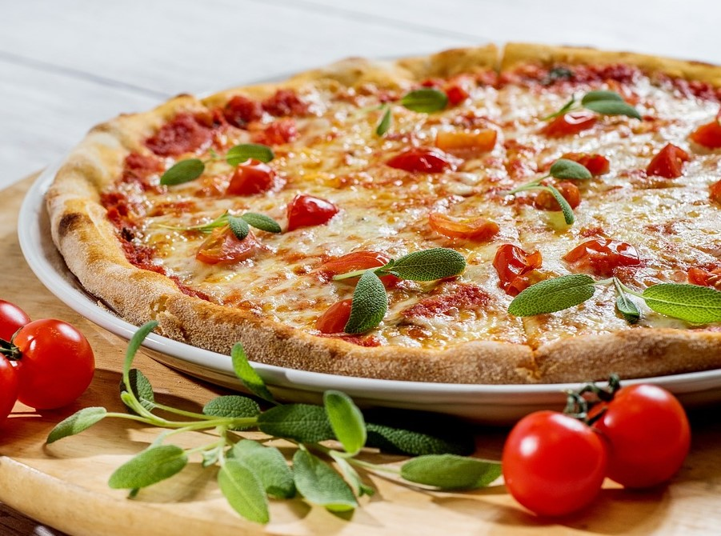
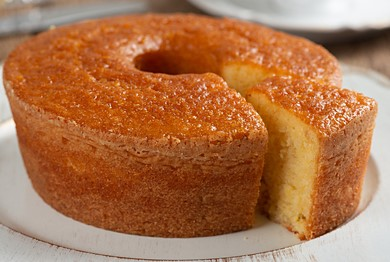

Modo de preparo
Pizza de marguerita
Massa
- 400 g de farinha de trigo
- 15 g / 1 tablete de fermento biológico
- 1 xícara (chá) de água morna
- 1 colher (chá) de sal
Recheio
- 1 (copo) de molho de tomate pronto
- 5 tomates
- Azeite o quanto baste
- 400 g de mussarela, peça inteira
- Manjericão a gosto
Modo de preparo
Tempo de preparo: 1h 30min
- Num recipiente, dissolva o fermento num pouco de água e deixe descansar por 5 minutos.Misture a farinha e o sal em outro recipiente.
- Faça um buraco no centro, adicione o fermento dissolvido e, aos poucos, a água morna.Misture tudo com as mãos até formar uma massa lisa. Se for preciso, acrescente mais farinha.
- Trabalhe a massa por cerca de 15 minutos. Faça uma bola e deixe descansar numa vasilha coberta com papel filme por 1 hora, ou até que a massa dobre de volume.
- Em seguida, trabalhe a massa por mais 10 minutos. Divida em quatro bolas iguais (para pizzas médias) e deixe crescer por mais 1 hora.
- Está pronta para abrir e assar. Asse em forno pré-aquecido em temperatura média (180 graus).

Bolo de fubá
Ingredientes
- 4 ovos
- 4 xícaras de chá de leite integral
- 3 xícaras de chá de açúcar
- 50 gramas de queijo parmesão ralado
- 1 pitada de sal
- 1 e 1/2 xícara de chá de fubá
- 2 colheres de sopa de farinha de trigo
- 2 colheres de sopa de margarina
- 1 colher de sopa de fermento químico em pó (fermento para bolo)
Modo de preparo
Tempo de preparo: 50min
- Em um liquidificador, coloque os ovos, o leite e o açúcar. Bata por cerca de 1 minuto, para misturar os ingredientes
- Depois disso, acrescente o queijo, o sal, o fubá, a farinha e a margarina. Bata novamente, até obter uma massa bem homogênea
- Por fim, adicione o fermento e bata na função “pulsar”, para incorporar o fermento somente
- Em seguida, despeje toda a massa em uma forma untada e enfarinhada e leve ao forno preaquecido a 180 ºC por 35 a 40 minutos
Bolinha de queijo
Ingredientes
- 250 gramas de mussarela ralada
- 1 ovo
- 4 colheres de sopa de amido de milho
- Óleo para fritar
Modo de preparo
Tempo de preparo: 40min
- Coloque todos os ingredientes em um recipiente e misture bem até formar uma massa modelável
- Pegue pequenas porções da massa, molde em formato de bolinha e disponha em uma forma;
- Leve para o congelador por 30 minutos;
- Frite as bolinhas em óleo bem quente e deixe secar no papel toalha